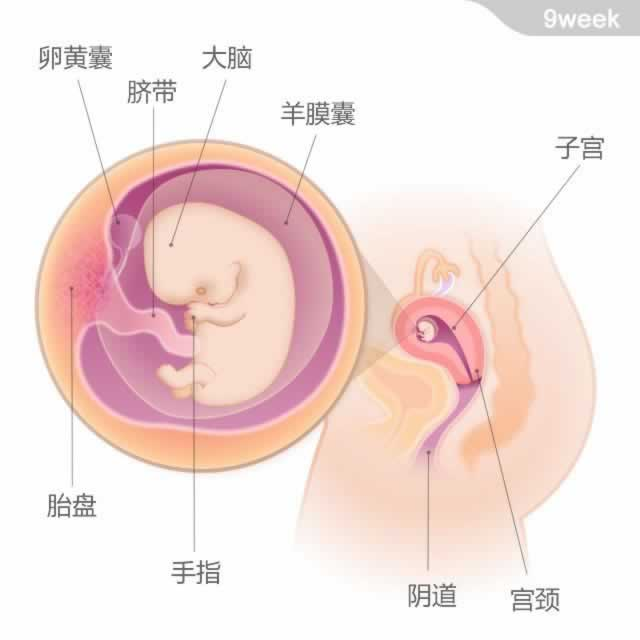

宝宝有一颗梅子大小，重约5克，从头部到臀部的长度为31~42毫米。
宝宝有一颗梅子大小，重约5克，从头部到臀部的长度为31~42毫米。
本周，宝宝的发育进入了胎儿期。进入胎儿期意味着宝宝身体结构的“平面图”已经勾勒完成，他的肾、肺、生殖器和肠胃系统等都已经存在，但还远没有发育成熟。接下来的30周将是在这个蓝图的基础上进行发育。
此时，宝宝的脑部发育十分迅速，虽然头与身体相比还是很大。他的心脏已经发育完全，许多内脏器官也开始工作了。宝宝的鼻子和眼睛都已清晰可见，更为细小的身体组成，如胎发、手指甲等也开始慢慢长出。他开始能做踢和吞咽的动作了。